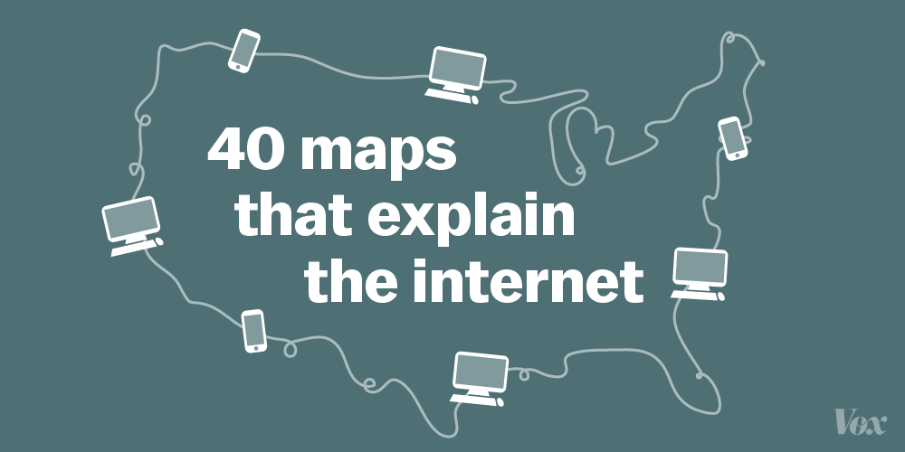
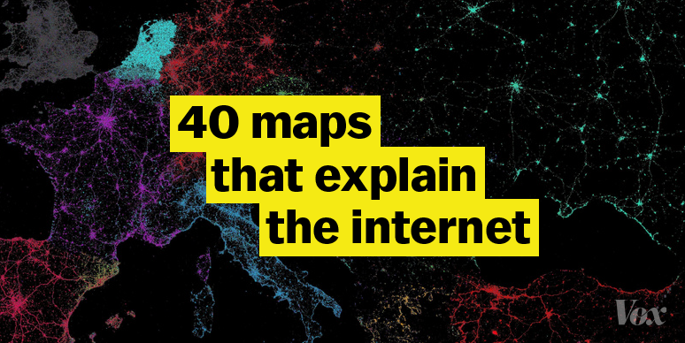
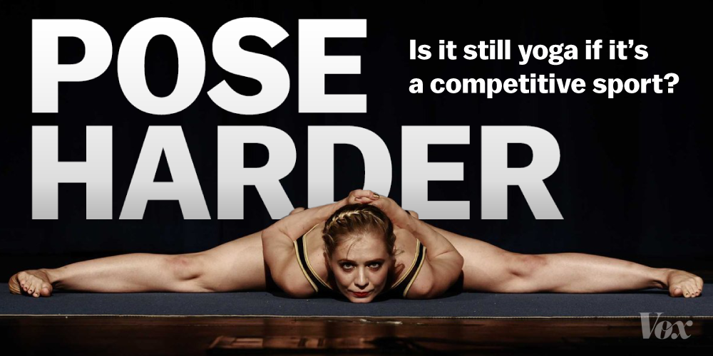
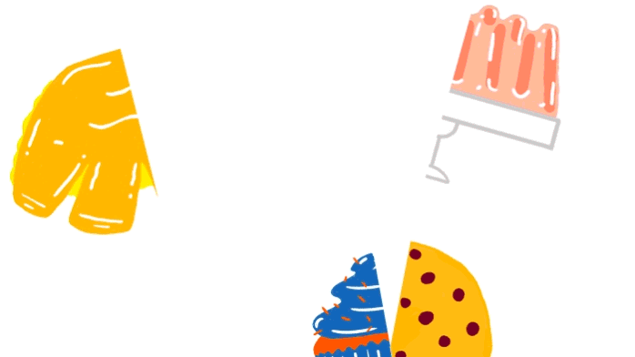

Social Media Design
Visuals are the name of the game when it comes to social media. I can help with that.
Visuals are the name of the game when it comes to social media. I can help with that.
Vox Media considers social media one of the key tools for growing audience, and huge part of this is optimizing visuals for different platforms. During my time on Vox.com's team, I helped determine the then-newly-launched site's visual presence on Twitter and Facebook.
My work with the team helped shape the first iteration of the company's tool for generating memes.
  The work I did helped inform the design direction for Vox's open-source meme generator.
I didn't just make memes, though. I also helped during the Racked redesign, creating different logos and cover images for each of Racked's cities, using illustrations from Dylan Lathrop.
I have also been called upon to create animations to grab more attention on different social media platforms.
This includes small experiments I've done for things like friends' blogs.